エジプト・イスマイリヤ前線基地2
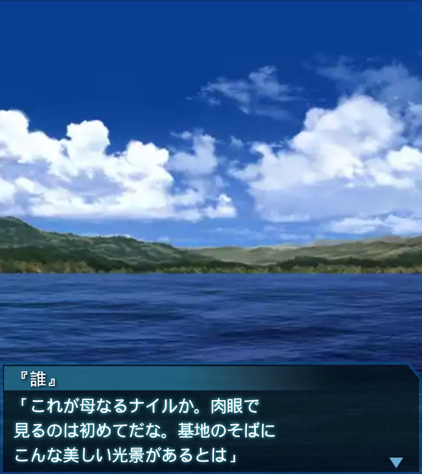
『誰』
「これが母なるナイルか。肉眼で
見るのは初めてだな。基地のそばに
こんな美しい光景があるとは」
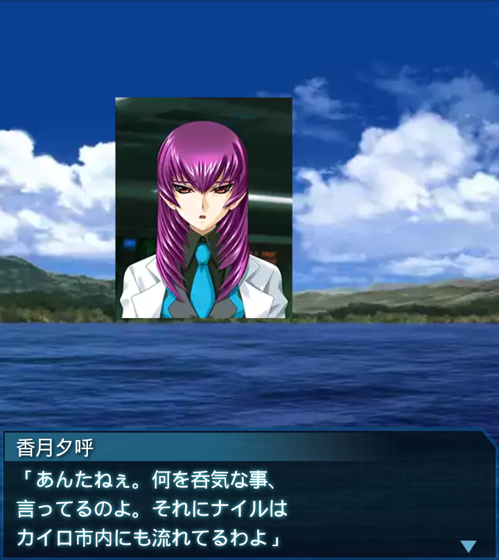
香月夕呼
「あんたねぇ。何を呑気な事、
言ってるのよ。それにナイルは
カイロ市内にも流れてるわよ」
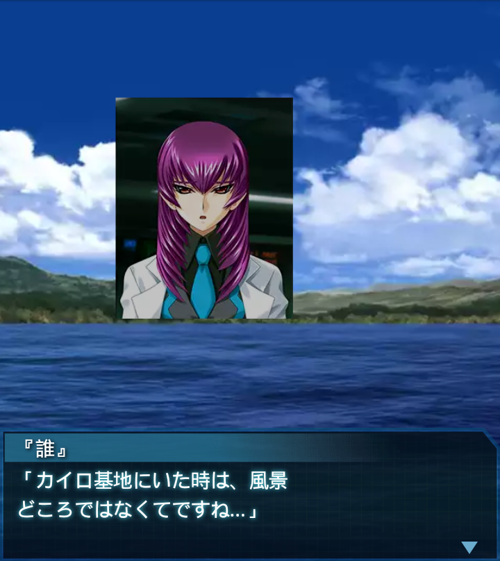
『誰』
「カイロ基地にいた時は、風景
どころではなくてですね…」
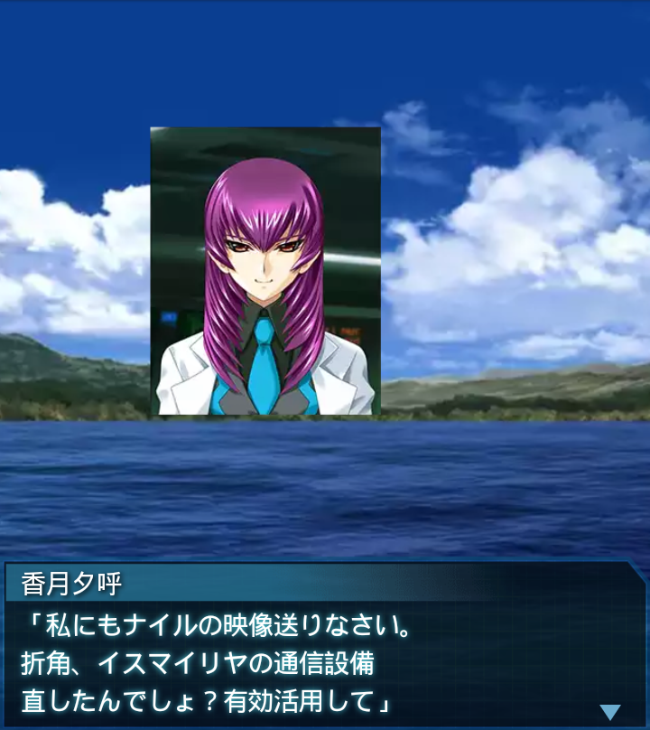
香月夕呼
「私にもナイルの映像送りなさい。
折角、イスマイリヤの通信設備
直したんでしょ？有効活用して」
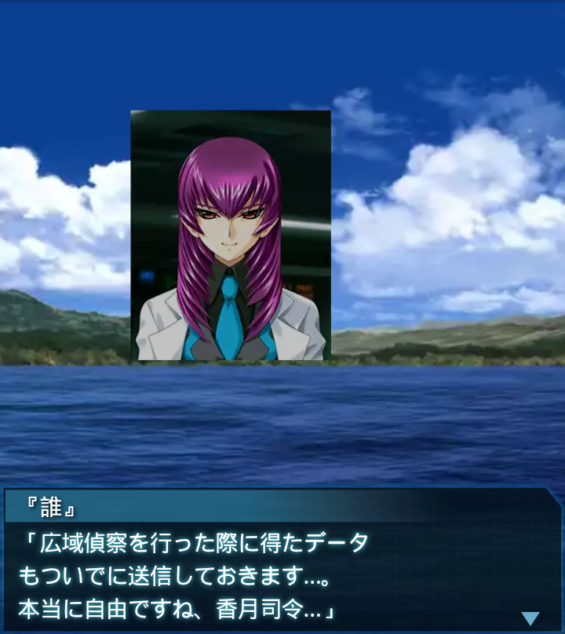
『誰』
「広域偵察を行った際に得たデータ
もついでに送信しておきます…。
本当に自由ですね、香月司令…」
香月夕呼
「ふうん。やっぱり通信映像越しで
ナイル川を見ても、臨場感に欠…
東５００ｋｍ地点に研究施設？」
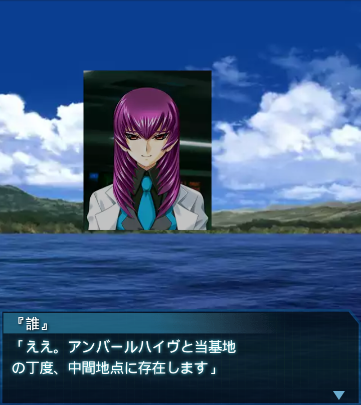
『誰』
「ええ。アンバールハイヴと当基地
の丁度、中間地点に存在します」
香月夕呼
「それ、ＢＥＴＡがうんざり
しそうな程に集まってそうねえ。
まずはそこから北の施設を――」
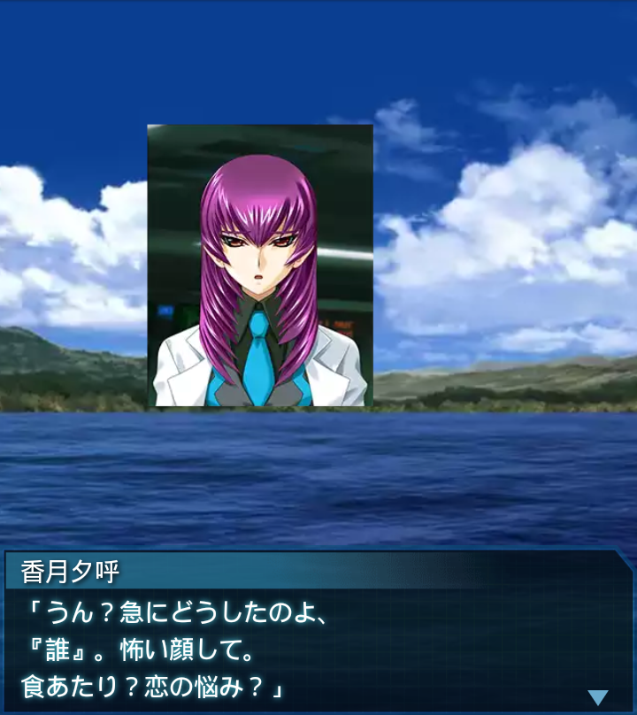
香月夕呼
「うん？急にどうしたのよ、
『誰』。怖い顔して。
食あたり？恋の悩み？」
『誰』
「ち、違います！各機、対岸に無数
のＢＥＴＡを視認！これより基地
防衛に入る！兵装使用自由！！」
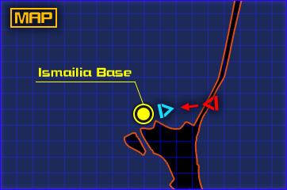
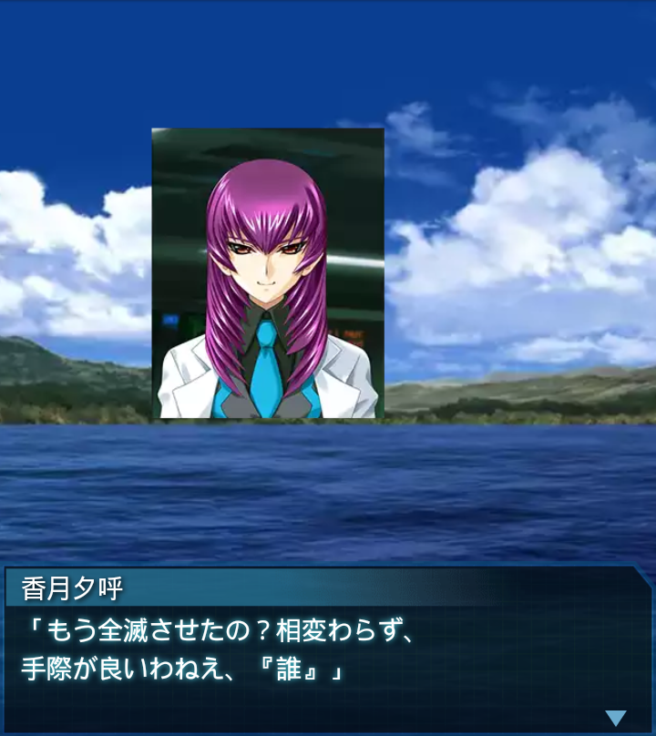
香月夕呼
「もう全滅させたの？相変わらず、
手際が良いわねえ、『誰』」
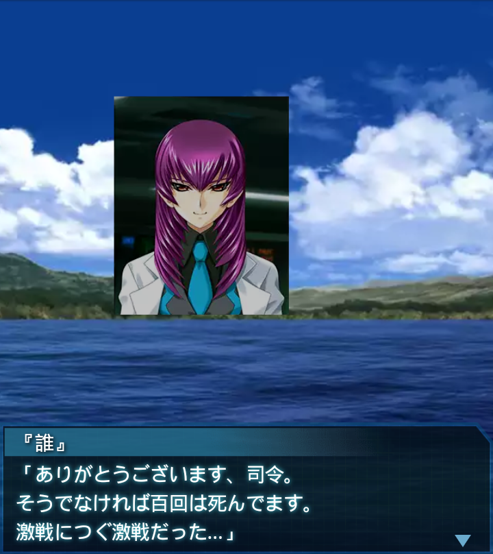
『誰』
「ありがとうございます、司令。
そうでなければ百回は死んでます。
激戦につぐ激戦だった…」
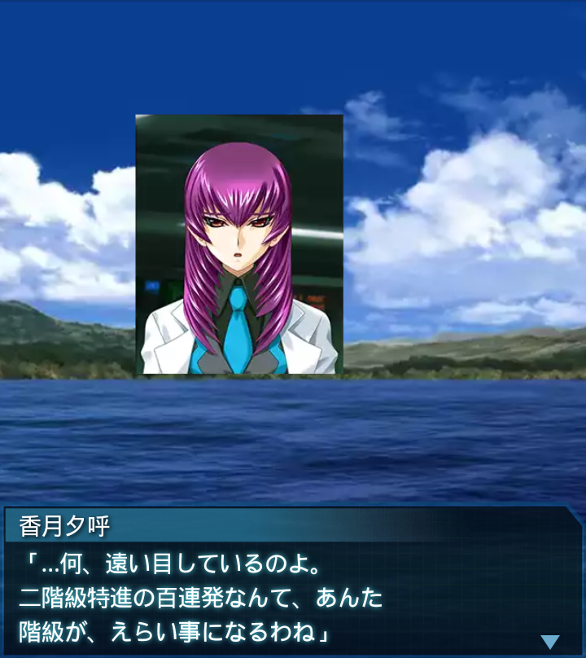
香月夕呼
「…何、遠い目しているのよ。
二階級特進の百連発なんて、あんた
階級が、えらい事になるわね」
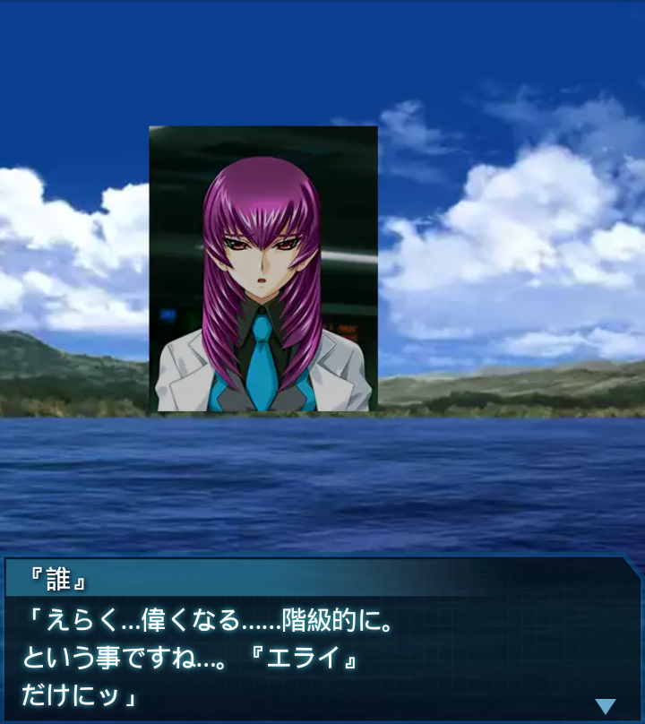
『誰』
「えらく…偉くなる……階級的に。
という事ですね…。『エライ』
だけにッ」
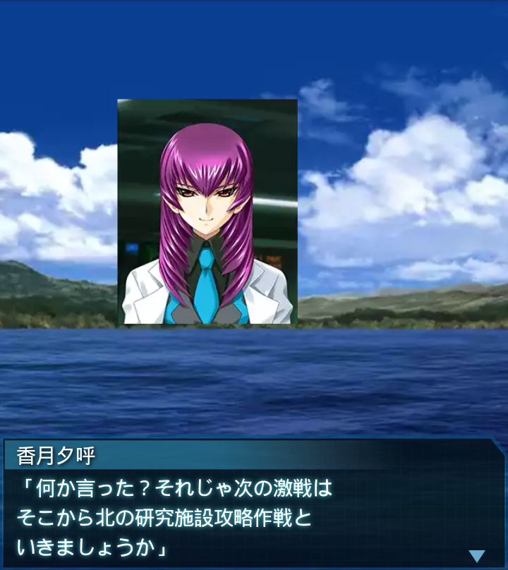
香月夕呼
「何か言った？それじゃ次の激戦は
そこから北の研究施設攻略作戦と
いきましょうか」
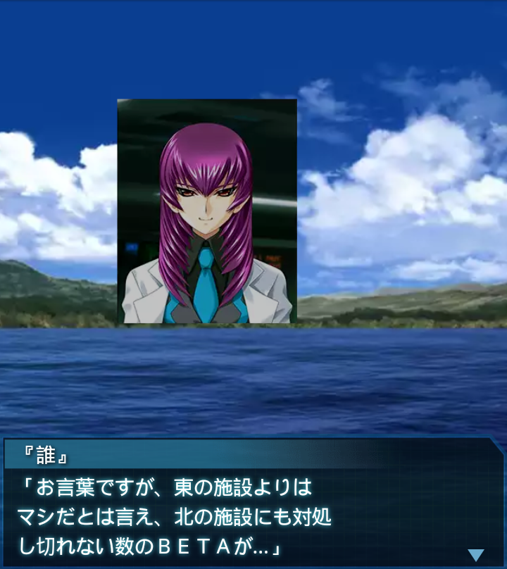
『誰』
「お言葉ですが、東の施設よりは
マシだとは言え、北の施設にも対処
し切れない数のＢＥＴＡが…」
香月夕呼
「まぁ、貰ったデータを、ざっと
見ても、基地を空っぽにするくらい
の戦力は必要よねぇ」
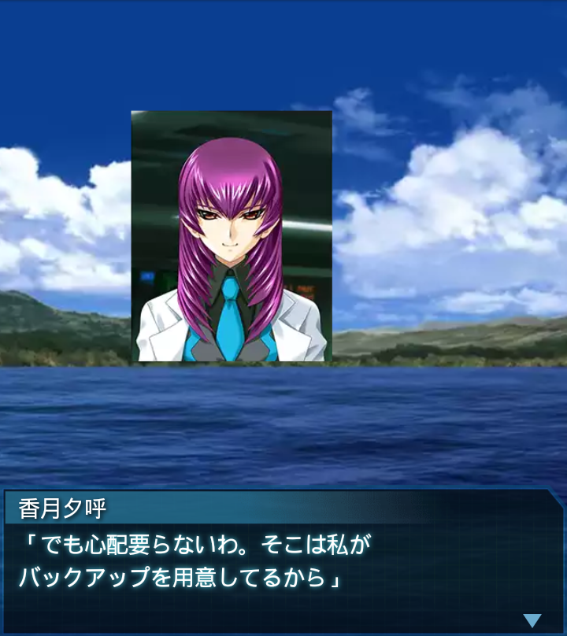
香月夕呼
「でも心配要らないわ。そこは私が
バックアップを用意してるから」
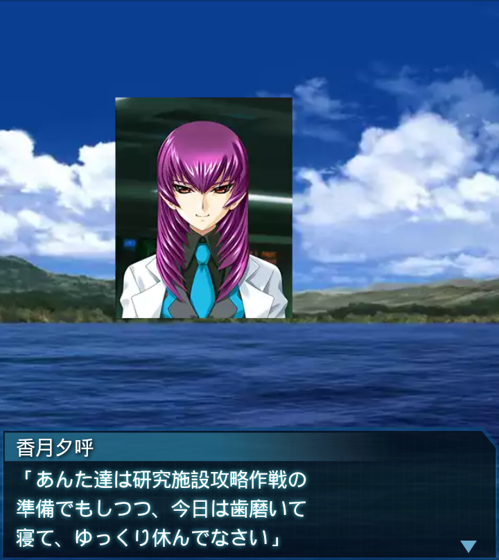
香月夕呼
「あんた達は研究施設攻略作戦の
準備でもしつつ、今日は歯磨いて
寝て、ゆっくり休んでなさい」

『誰』
「りょ、了解。『バックアップ』
期待しておりますッ…！」